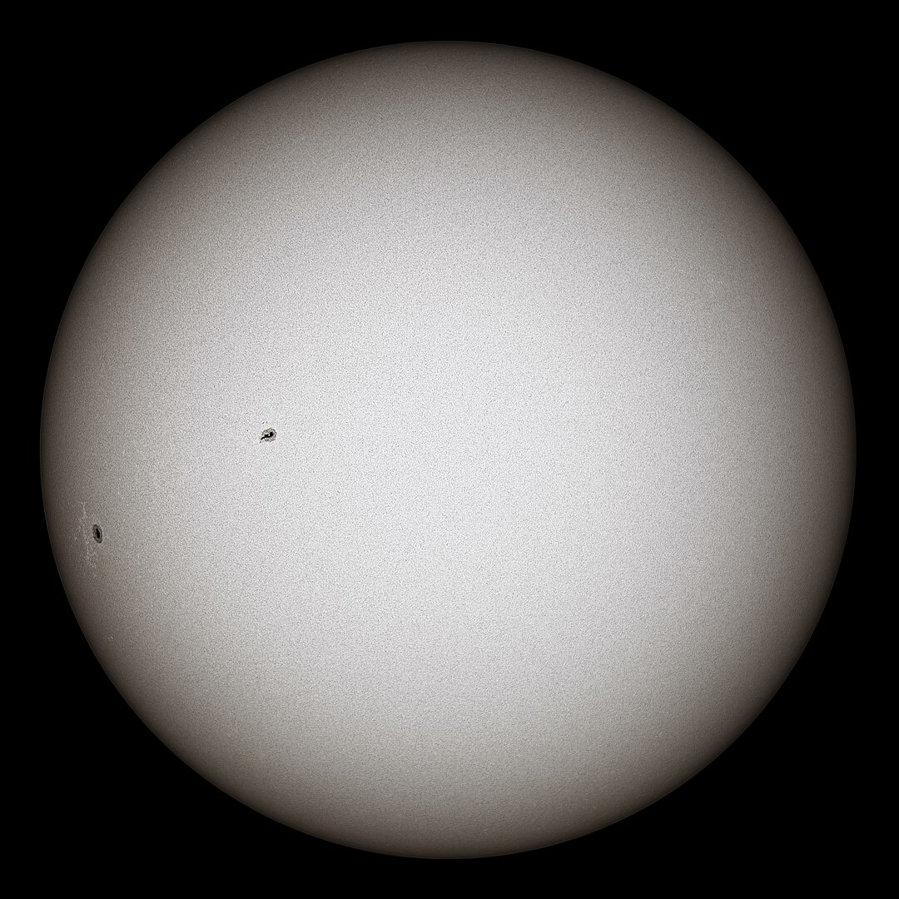

Sun

The Sun in true color by Matúš Motlo, May 8, 2019
The center of the Solar System, the Sun is 4.6 billion years old.
More information: (Approx.)
Dist. from The Sun
N/A
Avg. Radius
435,000 miles
Circumference
2.7M miles
Avg. Temp
10M°F